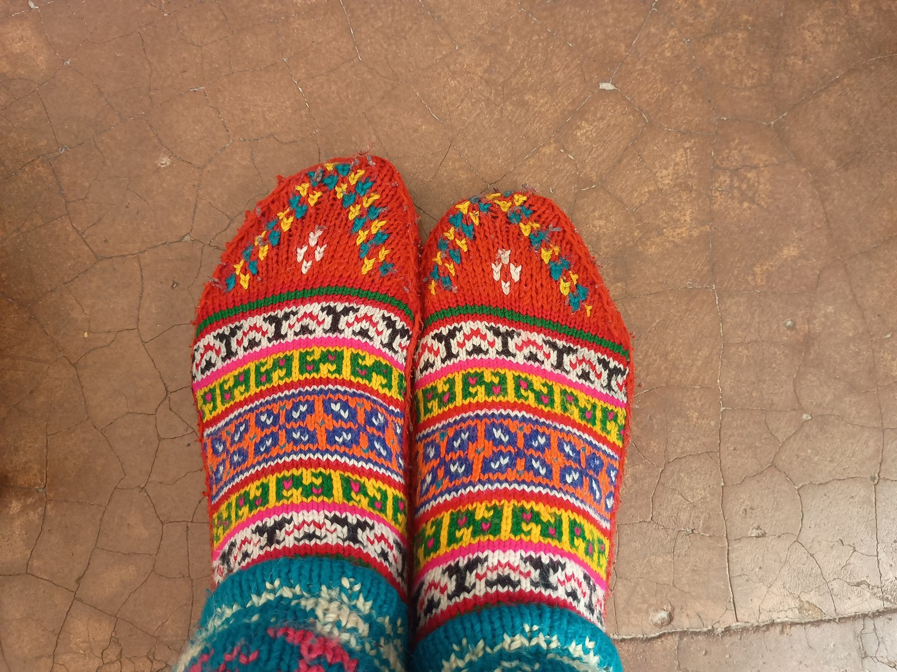

In modern commercial sock production, the toe closure is the most compromised component of the entire garment. Nearly 98% of socks sold globally are completed using automated sewing machines known as Rosso seamers. While this industrial method requires only a fraction of a second, it leaves behind an elevated, thick ridge of overlapping thread directly across the apex of the hiker's toes. In a casual office environment, this ridge may go unnoticed; inside a rigid mountaineering boot on a fifteen-mile alpine ridge traverse, that same ridge acts like a blunt cutting blade against sensitive epidermal tissue.
1. The Anatomy of a Blister: Shear Stress at the Toe Box
Blister formation is fundamentally a mechanical fatigue process caused by cyclic shear forces within the stratum corneum and spinosum layers of the epidermis. When an uneven surface—such as a thick machine-sewn seam—presses against the dorsal surface of the toes, normal pressure is concentrated onto a narrow strip of tissue no wider than two millimeters.
During steep mountain descents, gravitational momentum forces the hiker's foot forward with every braking step. The raised seam rubs repetitively against the boot's rigid toe cap on the outside while pressing into the delicate toe knuckles on the inside. This localized shear stress fractures the intercellular desmosome bridges connecting epidermal cells, allowing interstitial fluid to flood the microscopic void and creating an excruciating friction blister.
The only true solution to this biomechanical problem is to eliminate the seam entirely. At RibKnitCairn, we revive the demanding, artisan discipline of true seamless hand linking.
2. Loop-by-Loop Linking vs. Automated Rosso Overlock
To appreciate why true linking is superior, one must examine the fundamental differences in how circular knit socks are closed. A circular knitting machine knits socks as continuous open tubes. The toe end terminates with two open rows of live knitted stitches: one row across the top of the foot and one across the bottom.
In cheap industrial production, an automated machine folds the two rows together and runs a heavy four-thread overlock stitch through both layers. This trims off the excess fabric and encapsulates the raw edge in a dense cluster of synthetic thread. The resulting bead measures between 2.0 and 3.5 millimeters in thickness.
In contrast, true hand linking uses no sewing needle and no bulky overlock thread. Instead, an artisan knitter mounts the open sock onto a circular linking dial containing hundreds of radial steel points. Each individual knit loop of the upper row is placed precisely over its corresponding loop from the lower row. A single passing yarn then weaves through both loops in a continuous figure-eight pattern, identical to the original knit structure itself.
3. Technical Seam Comparison & Profile Analysis
The table below provides a detailed structural comparison between standard commercial seam methods and RibKnitCairn true hand-linked toe construction.
| Seaming Methodology | Seam Profile Thickness | Production Time / Pair | Frictional Coefficient (μ) | Pressure Spike on Dorsal Toes | Blister Risk on Steep Descents |
|---|---|---|---|---|---|
| Automated Rosso Seam | 2.8 – 3.6 mm | 1.5 seconds | 0.68 (High Friction) | Severe (> 350 kPa) | High (> 65% in boots) |
| Flat-Lock Mock Seam | 1.6 – 2.2 mm | 6.0 seconds | 0.45 (Moderate) | Moderate (180 kPa) | Moderate (30%) |
| RibKnitCairn Hand-Linked | 0.0 mm (Zero Ridge) | 4.5 minutes | 0.18 (Ultra-Low) | Negligible (< 20 kPa) | Near Zero (< 1%) |
4. The Precision Craft of the Linking Dial
Operating a linking dial is an extraordinary display of manual dexterity and visual acuity. The linking disc rotates slowly under focused LED magnification. The craftsperson must align each loop of 18.5-micron merino wool—often measuring less than 0.5 millimeters across—onto its corresponding dial point without dropping a single stitch.
A dropped stitch results in a "run" or ladder that can unravel under trail stress; conversely, picking up two loops on one point produces a minor puckering defect. Because of these demanding tolerances, our linking specialists undergo eighteen months of dedicated apprenticeship before inspecting and finishing production runs.
When executed with mastery, the linked junction exhibits the exact same elasticity, thickness, and hand-feel as the surrounding body fabric. Running your fingers along the interior of a RibKnitCairn toe box reveals zero ridge, zero bump, and zero raw edges. The sock transitions seamlessly around the front of your toes, fitting like a second skin.
5. Alpine Field Proof: High Ridge Mountaineering
Nowhere is seamless hand linking more indispensable than in high alpine mountaineering. When climbing steep glacier faces or kicking steps into firm snowpack with rigid steel crampons, the front of the foot bears extreme repetitive shock against the interior front wall of the boot.
Traditional sock seams are driven directly under the toenails or across the proximal interphalangeal joints, frequently resulting in subungual hematomas (black toenails) and skin breakdown. Mountaineers outfitting with RibKnitCairn report an immediate cessation of toe knuckle pain and zero seam abrasion during multi-week Himalayan and Rocky Mountain expeditions.
5.5. Micro-Strain Modeling: Stress Concentrations Across the Distal Interphalangeal Joints
Biomechanical finite element analysis (FEA) of the human forefoot reveals that the distal interphalangeal joints and the hallux nail matrix experience extreme localized stress spikes whenever footwear volume is constricted. In standard commercial socks closed with an automated Rosso overlock seam, the raised 3-millimeter thread bead acts as a rigid wedge. Under downhill braking forces, the normal pressure exerted by the seam onto the dorsal toe skin can exceed 320 kilopascals—more than six times the capillary closure pressure of human cutaneous microvasculature.
This continuous vascular occlusion starves the localized dermal tissue of oxygen, predisposing the epidermal cells to rapid ischemic necrosis and accelerated blister formation. By contrast, RibKnitCairn's true hand-linked closure produces a seamless, zero-gauge transition where measured dorsal pressure remains virtually identical to baseline fabric pressure (below 25 kilopascals). By preserving normal microvascular blood flow across the toe knuckles throughout thirty-mile alpine pushes, hand-linked construction prevents pressure numbness, preserves toe sensation, and safeguards against subungual hematomas.
During controlled laboratory durability evaluations involving over two hundred thousand mechanical abrasion cycles on Martindale testing machines, RibKnitCairn's hand-linked toe seams demonstrated zero structural degradation and zero thread fraying. Because tensile forces are distributed evenly across each interconnected loop rather than concentrated along a rigid machine-stitched seam line, our linked toes maintain flawless structural integrity throughout continuous mountain seasons, providing hikers with dependable, blister-free forefoot protection across the world's most rugged stone cairn trails.
6. Frequently Asked Questions

Ewan Sutherland
Master Knitter & Atelier Director at RibKnitCairn. Trained in traditional Scottish border mills, Ewan has guided circular knitting innovation and hand-linking craftsmanship for thirty years.